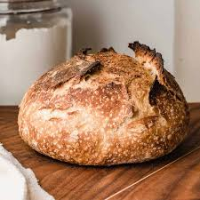

Sourdough Bread

Description
A wonderfully easy recipe for sourdough bread. Make this and wow your friends and family with sourdough bread every bit as good as your would find in the best San Fransisco bakeries.
Ingredients
- 630 grams all purpose flour
- 70 grams wheat flour
- 490 grams of water
- 20 grams sea salt
- 150 grams of sourdough starter
Steps
- Place the water and starter in a large mixing bowl.
- Mix the salt, wheat flour, and all purpose flour together.
- Add the flour and salt to the bowl with the water and starter.
- Mix together until there are no pieces of dry flour.
- Cover and let rest for 30-60 minutes.
- Every 30 minutes do a series of stretch and folds.
- After a series of 3 stretch and folds, cover and let rest until the dough has approximately doubled.
- Split the dough into 2 equal parts and form into tight balls. Place in bannetons and put in the refrigerator to cold ferment 8-12 hours.
- Place a Dutch Oven in the oven and heat your oven at 500 degrees F for at least 30 minutes.
- Use a sharp knife or preferably a bread lame, to score the top surface of the loaves.
- Place one dough ball into the Dutch Oven and bake covered for 25 minutes. After which, remove the lid and turn the oven down to 400 degrees F and cook 20 minutes.
- Once the bread has baked, remove and place on cooling rack. Allow to cool completely before enjoying.
- Slice and enjoy!